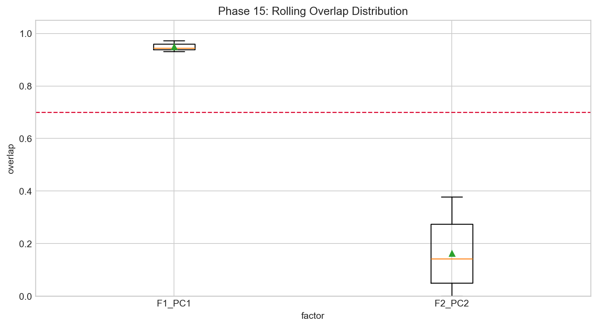
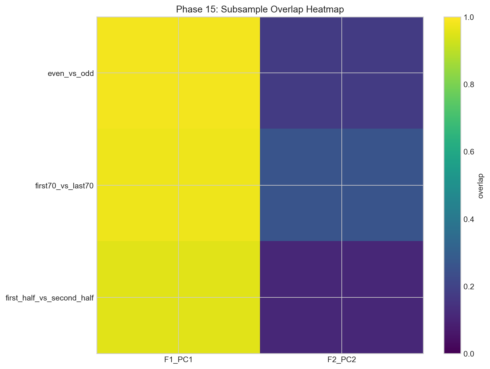
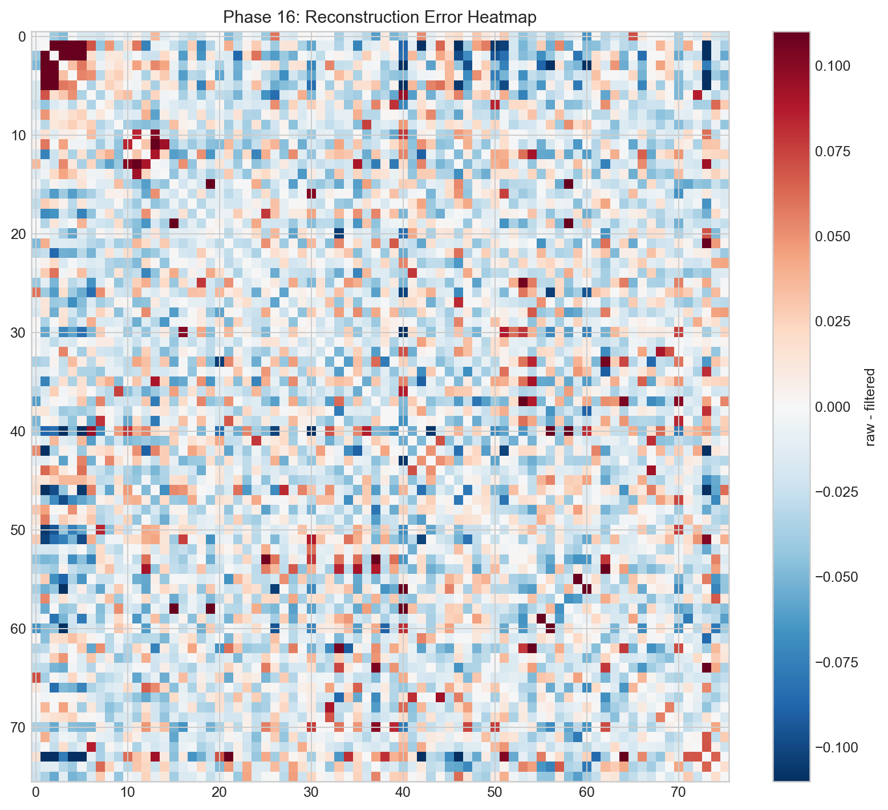
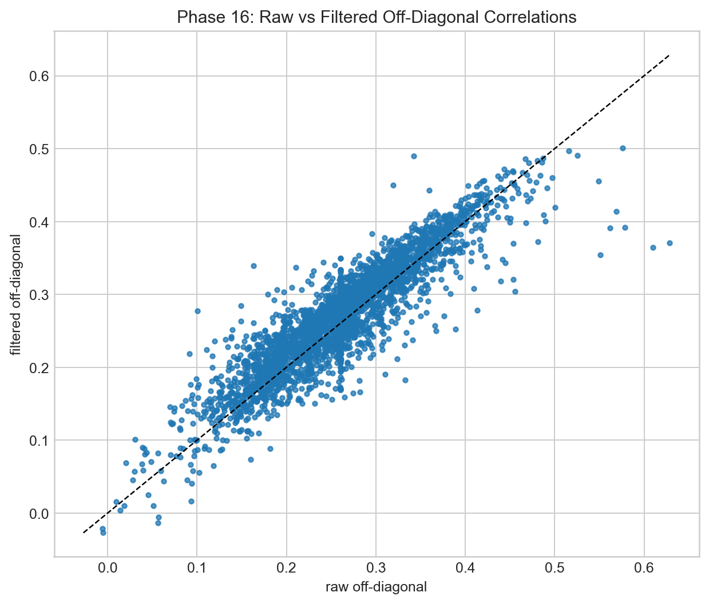

Stability and Reconstruction
Entry: this is where I tested whether the factors are stable enough to trust, then measured what reconstruction keeps and what it loses.
I split this work into two mental tests. First: geometric stability (overlap and angle behavior across rolling windows and subsamples). Second: reconstruction fidelity (how close filtered structure stays to raw structure, and whether PSD pathologies improve).
Stability reality from phase outputs
In multiple outputs and reruns, the first factor keeps showing strong stability while the second can rotate sharply. In strict and audit contexts, PC1 overlap remains high enough to pass the practical threshold tests I set. Outlier-drop reruns barely changed this story, which is exactly what I wanted to see.





Reconstruction side
Filtered reconstruction gives me a cleaner matrix with strong off-diagonal fidelity and better numerical behavior. I do not interpret this as “perfect recovery.” I interpret it as useful denoising that preserves dominant structure and drops enough noise to stabilize downstream calculations.





What I wrote in my notebook margin
“PC1 is my anchor. PC2 is my warning light. Reconstruction is a filter, not a miracle.” That line still describes this phase best.
Shared reference
Dictionary: same terminology map used in every page.